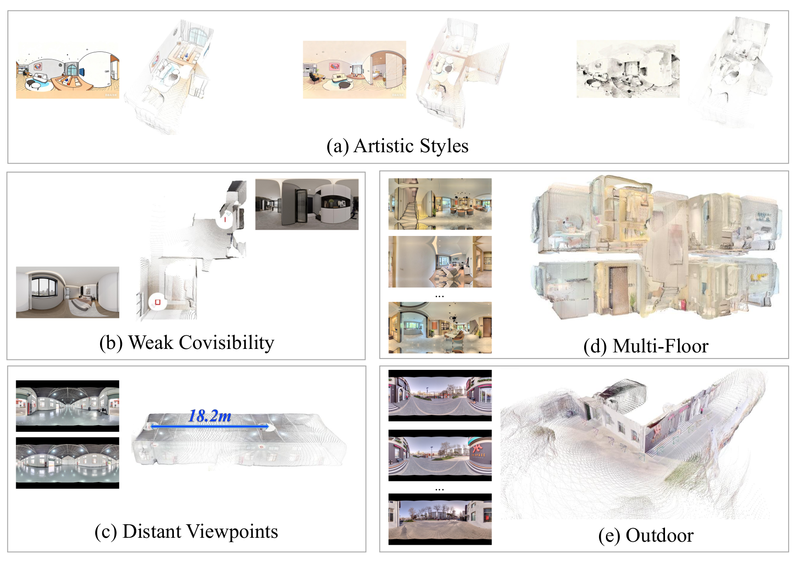
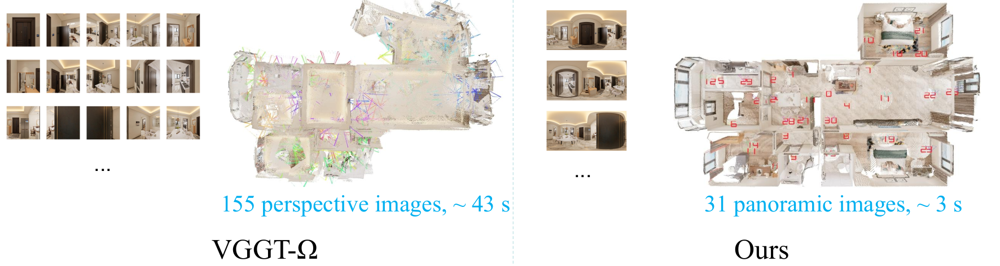

Argus takes a sparse, unordered set of panoramic images and reconstructs a complete, geometrically consistent, and metric-scale 3D indoor scene in a single feed-forward pass.
A data-driven feed-forward network that reconstructs complete, consistent, metric-scale indoor 3D scenes from sparse, unordered panoramic images.
Metric feed-forward 3D reconstruction for panoramic data remains under-explored due to the lack of large-scale panoramic RGB-D training data. We present Realsee3D, a hybrid dataset of 10K indoor scenes (1K real, 9K synthetic) with 299K panoramic viewpoints and precise metric annotations, and Argus, a feed-forward network trained on it for metric panoramic 3D reconstruction. In the sparse unordered capture setting of Realsee3D, a poorly chosen coordinate anchor can cause global pose drift.
Argus addresses this with a learned covisibility module that selects the geometrically optimal reference view to anchor the metric world frame. To further improve multi-task learning, we decompose the bidirectional pixel-to-world mapping into interpretable sub-steps with per-step supervision and cross-coordinate joint constraints, reinforcing geometric consistency across prediction branches. On the Realsee3D benchmark, Argus achieves state-of-the-art metric performance in camera pose estimation, depth estimation, and point cloud reconstruction.
Argus first extracts patch tokens from each panoramic view with a DINOv2 backbone. A lightweight Covisibility Transformer predicts a global covisibility score per view and selects the highest-scoring view as the reference frame, which receives a dedicated reference camera token. A deeper Geometry Transformer then aggregates multi-view geometric features, after which several prediction heads regress camera poses (from camera tokens via MLP) and dense outputs — depth and cross-coordinate-frame point maps — via independent DPT heads.
The core idea is to explicitly factorize the bidirectional pixel-to-world transform into several interpretable intermediate geometric representations, supervising each sub-step individually and enforcing joint pose constraints across coordinate frames. This lowers optimization difficulty and strengthens multi-task synergy. The model outputs native metric scale without post-hoc alignment.

Network overview. A Covisibility Transformer selects the reference view, a reference-based Geometry Transformer aggregates multi-view features, and multiple heads predict the factorized geometric representations.

Geometric factorization. The bidirectional pixel↔world transform of a single view is decomposed into explicit, individually supervised geometric steps.

Realsee3D combines LiDAR-captured real scenes with large-scale synthetic scenes, providing sparse unordered panoramic image sets that reflect practical acquisition.

Qualitative comparison. Argus reconstructs more accurate metric geometry and sharper structural boundaries than prior methods.

Covisibility learning. Argus selects reference views that are more central and better connected within the scene, anchoring a stable metric coordinate system.

Generalization. Reconstruction results on diverse indoor scenes.

Zero-shot reconstruction. Argus generalizes to unseen panoramic datasets it was never trained on.

Panoramic vs. perspective. The wide field of view of panoramic input yields more complete scene coverage.
@inproceedings{li2026argus,
title = {Argus: Metric Panoramic 3D Reconstruction for Indoor Scenes},
author = {Li, Xi and Li, Linyuan and Wu, Yan and Rao, Tong and
Zhang, Kai and Hui, Xinchen and Pan, Cihui},
booktitle = {Proceedings of the European Conference on Computer Vision (ECCV)},
year = {2026}
}